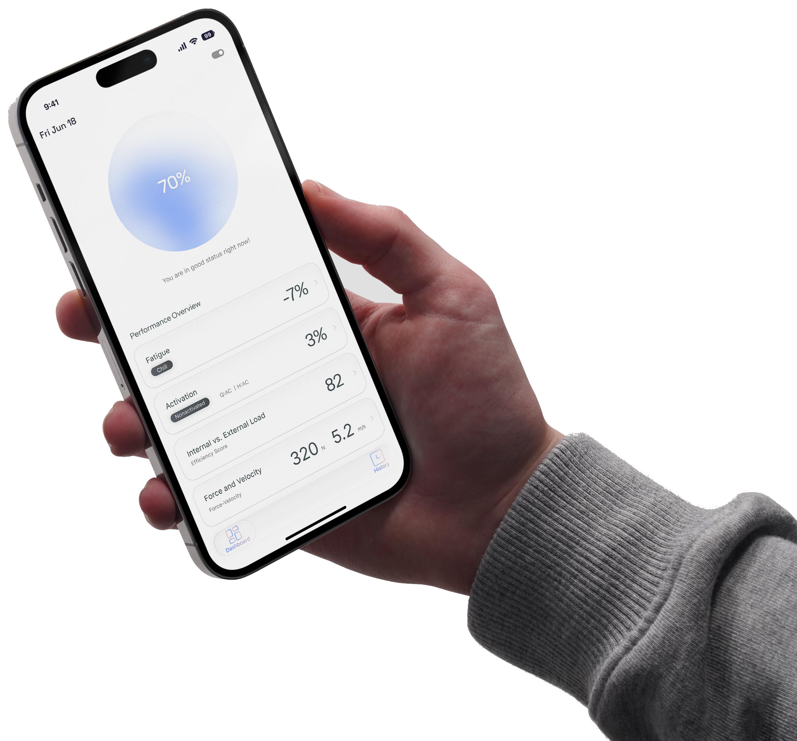
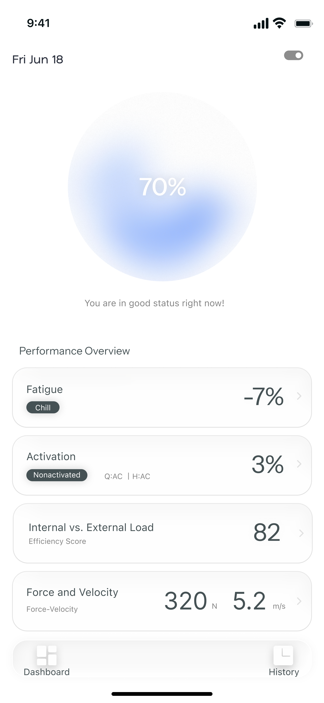
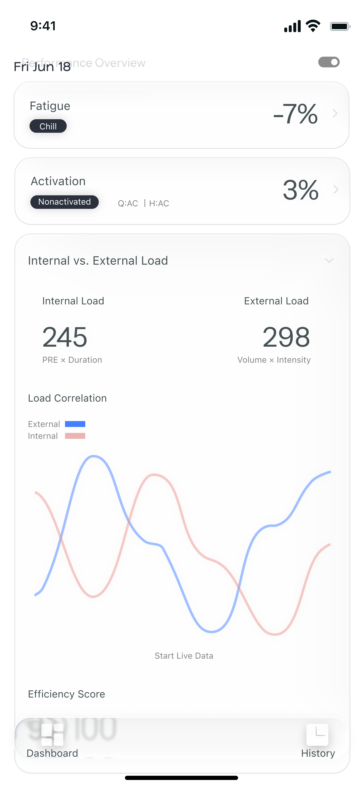
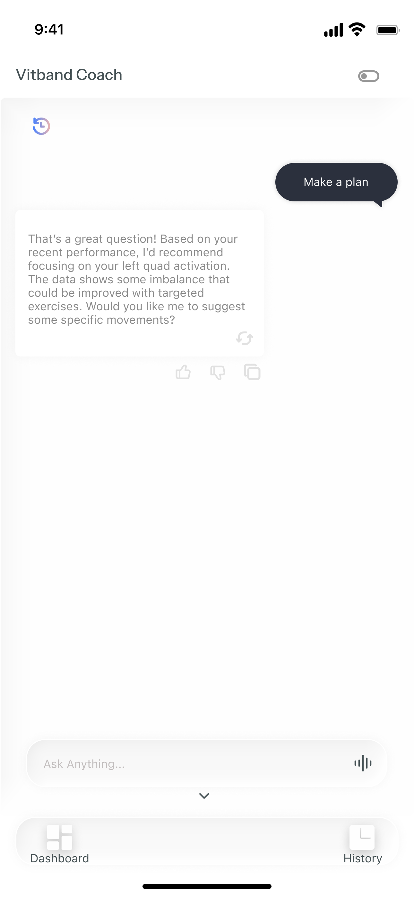

INFORMATION OVERLOAD
The original experience surfaced technical performance data without enough hierarchy, making it difficult to quickly identify what required attention.
Wearable muscle fatigue monitoring for everyday training
VITBAND is a wearable muscle fatigue monitor paired with a mobile app for everyday training. The app turns muscle performance data into a fatigue score users can read at a glance, with a dashboard for tracking changes over time and an AI Coach for questions about training and recovery.

01 / HI-FI
02 / THE CHALLENGE
The original experience surfaced technical performance data without enough hierarchy, making it difficult to quickly identify what required attention.
Key information was distributed across multiple layers, creating unnecessary effort in a context where users need answers quickly.
Performance metrics communicated physical condition, but did not always make the next action obvious.
03 / RESEARCH
Rather than starting with visual styling, I first looked at how the existing product communicated information, how comparable fitness platforms structured complex data, and where VITBAND could simplify the training experience.
Reviewed the existing prototype to identify friction in navigation, information hierarchy, terminology, and visual communication.
Studied how established fitness platforms translate physiological data into recognizable performance signals and training guidance.
Worked with the team to understand the underlying muscle data, technical capabilities, and the information users needed during training.
Translated these findings into alternative information structures, interaction patterns, and visual models.
I looked at established fitness platforms including WHOOP, Polar, and Oura to understand how complex physiological information is translated into everyday training and recovery experiences.
Turns complex physiological data into recognizable performance signals.
Preserve data depth while making the meaning of each signal immediately understandable.
Provides detailed training and performance analysis.
Reduce navigation and information density when users need answers during an active workout.
Uses clear visual signals to make recovery and readiness easier to understand.
Prioritise muscle-specific training guidance.
Reduce navigation and metric interpretation during active workouts.
04 / AUDIENCE
Existing audience research helped highlight which types of training information were perceived as most valuable.
05 / KEY INSIGHTS
Performance data becomes more useful when users can understand what it means and what they should do next.
Pair important metrics with clear explanations and recommendations.
During training, users need to recognize their current condition without navigating through dense layers of information.
Create stronger hierarchy and surface the most important signals first.
Training feedback should reinforce effort and accomplishment rather than making progress feel like continuous depletion.
Use progress-oriented visual models wherever the underlying data allows it.
06 / DESIGN STRATEGIES
Surface the most important information first.
Connect performance signals to meaningful next steps.
Frame feedback around progress and accomplishment.
Build a visual language that works across monitoring, coaching, and history.
07 / KEY DESIGN DECISIONS


Replaced a 100→0 energy score with a 0→100 fatigue score, so users can immediately read a higher number as more muscle fatigue.
Made the fatigue score the focal point of a dashboard with 6+ metrics, so users can check their current state at a glance and explore the details when needed.
Put a suggested recovery step directly on the dashboard and gave AI Coach four quick actions so users can start a follow-up conversation without having to write a question from scratch.
08 / KEY EXPERIENCE — AI COACH
The dashboard shows users how fatigued they are. AI Coach helps them work through what to do next. I designed four quick actions that give users a starting point for interpreting their fatigue, thinking through recovery, and asking follow-up questions about their training.




09 / RECOGNITION
VITBAND was recognized with a 2026 Red Dot Award in Brands & Communication Design.